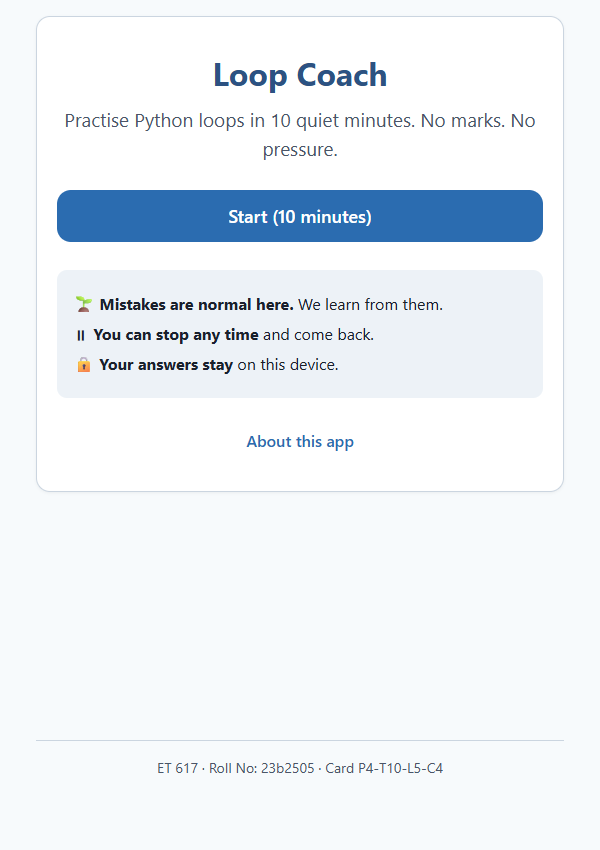

Adaptive Practice Tutor for Python Loops with Automatic Question Generation
| Field | Value |
|---|---|
| P — Problem | P4 Adaptive tutor with automatic question generation (Adaptive learning · Assessment · Generative AI) |
| T — Topic | T10 Loops in block or Python programming (Class 8–11) — Python for loops with range() |
| L — Learner | L5 Learner repeating the topic after failing it once, high anxiety, low self-efficacy |
| C — Constraint | C4 10-minute sessions (one full sequence fits in 10 min; stop and resume where left off) |
| Roll Number | 23b2505 |
| Application Name | Loop Coach |
| Live Deployed URL | https://et617-endsem-23b2505.vercel.app |
| GitHub Repository | https://github.com/hitanshmakwana/et617-endsem-23b2505 |
Class 10 students encountering introductory programming frequently fail their initial loops assessment due to two persistent, unaddressed mental model flaws: assuming that range(n) begins at 1 or includes the terminal number n, and assuming that every line of code physically placed after a for statement repeats regardless of indentation. When a learner fails this topic once, repeated exposure to traditional high-stakes worksheets amplifies test anxiety, triggers learned helplessness, and leads to immediate task abandonment at the first red mark. Traditional worksheets are fundamentally static; they cannot diagnose which underlying misconception caused an erroneous answer, nor can they dynamically adapt by offering alternative visual analogies, remedial prerequisite practice, or higher-level challenges. Loop Coach resolves this educational impasse by providing a private, low-stakes, 10-minute adaptive practice environment that continuously diagnoses misconceptions, scaffolds understanding through multi-modal micro-lessons, and dynamically adjusts task difficulty.
for loop employing single-argument range(stop), two-argument range(start, stop), or three-argument range(start, stop, step) constructs.range(n) generates values strictly from 0 to n − 1, and why an unindented statement executes only once following loop termination.total = total + step) across multiple loop iterations and correctly state the final aggregated value.
Where & When: At home in the evening, approximately 15–20 minutes after dinner in a quiet domestic corner.
Device: A shared family laptop running Chrome or a parent's budget Android smartphone (screen width down to 360 px).
Time Constraint (C4): Focused sessions capped at exactly 10 active minutes, accommodating evening fatigue without cognitive burnout.
| Attribute | Profile Details |
|---|---|
| Name & Age | Riya Shah, 15 years old (Class 10, State Board English-Medium School, Ahmedabad). |
| Prior Knowledge | Can write basic print() statements; understands primitive variable assignment (x = 5); saw loops in computer class but failed the unit test (scored 9/25). |
| Misconception M1 (Range Boundary) | Believes range(5) yields 1, 2, 3, 4, 5 (assumes natural counting starting at 1 and inclusive of the upper bound). |
| Misconception M2 (Indentation Scope) | Ignores indentation; believes every line written after a for line repeats in every iteration (treats code like unstructured prose). |
| Device & Time | Budget Android phone (360px) or shared family laptop; 10 minutes in the evening. |
| Language | Speaks Gujarati at home; English-medium school. Prefers simple, conversational English with short sentences and active verbs. |
| Emotional State | High anxiety, low self-efficacy. Stops practicing immediately if she sees red marks, crosses (❌), or percentage scores. |
Before questions begin, the learner explores three dynamic interactive concept cards:
for i in range(3): print("Hi") with an interactive stepper (+/-) and step-by-step runner showing Hi printing sequentially.range(3) gives 3 numbers: Shows for i in range(3): print(i) with an interactive runner tracing rounds: Round 1 (i=0), Round 2 (i=1), Round 3 (i=2), highlighting that counting starts at 0 and stops before 3.for i in range(2): print("Tea")\nprint("Done") with color-coded boundaries (teal for repeating lines inside the loop, orange for lines outside).| QID & Format | Code & Prompt | Model Answer | Tailored Feedback for Correct, M1, and M2 Responses |
|---|---|---|---|
| Q03 MCQ (L1, M1) |
range(5)Which numbers does range(5) give? A: 1, 2, 3, 4, 5 B: 0, 1, 2, 3, 4 C: 0, 1, 2, 3, 4, 5 D: 1, 2, 3, 4 |
0, 1, 2, 3, 4 |
Correct: "Yes! range(5) gives 5 numbers: 0, 1, 2, 3, 4." M1 (Picked A/C/D): "That is a very common mix-up. Many people expect range(5) to start at 1 or to include 5. We will look at it another way." Generic: "Not quite yet. range(5) gives 5 numbers, starting from 0." |
| Q04 MCQ (L1, M2) |
for i in range(3):How many times will "Bye" be printed? A: 1 B: 3 C: 4 D: 0 |
1 time |
Correct: "Yes! print('Bye') is not indented, so it is outside the loop. It runs once, after the loop ends." M2 (Picked B/C): "That is a very common mix-up. Only the indented lines repeat. We will look at it another way." Generic: "Check the spaces at the start of print('Bye'). Is it inside the loop or outside?" |
| Q05 PREDICT (L2, M2) |
for i in range(2):What does this code print? |
A B A B C |
Correct: "Yes! A and B are indented, so they repeat twice. C is not indented, so it prints once at the end." M2 (Typed "A B C A B C"): "That is a very common mix-up. print('C') is not indented, so it does not repeat. We will look at it another way." |
| Q06 ORDER (L2) |
Put the lines in order. Print Start once, Hello three times, then Done once. Lines: print("Start"), for i in range(3):, print("Hello"), print("Done") |
Start → for → print("Hello") → Done |
Correct: "Yes! Start runs once, the indented Hello repeats 3 times, then Done runs once." Generic: "The indented print('Hello') must sit right under the for line." |
| Q09 EXPLAIN (L2, M2) |
for i in range(3):In your own words: why is "Bye" printed only one time? |
"Because print('Bye') is not indented. It is outside the loop, so it runs only once, after the loop finishes." |
Correct: "Great explanation! A line that is not indented is outside the loop, so it runs only once." M2: "You are close. Think about the spaces at the start of the line. Does print('Bye') have them?" |
Live Deployed URL: https://et617-endsem-23b2505.vercel.app
Identity Token (Rendered on all 7 screens): ET 617 · Roll No: 23b2505 · Card P4-T10-L5-C4

QUESTION, FEEDBACK, or LESSON screens and when the browser tab is visible. Welcome, About, and background tabs freeze the timer.localStorage under et617_state_v1. Returning to the app displays "Continue where I stopped" with the exact remaining time and question index restored.Step 1: Q03 answered correctly (Option B: 0, 1, 2, 3, 4) without hints.
Step 2: Q04 answered correctly (Option A: 1) without hints (2nd consecutive correct).
Outcome: Difficulty advances from Level 1 to Level 2 (served fresh Level 2 question).
Step 1: Q03 answered with Misconception M1 (Selected Option A: 1, 2, 3, 4, 5).
Step 2: Routes to Lesson ALT_M1 (Indian ground-floor building analogy + 5-round trace table).
Step 3: Follow-up Question 2 answered wrongly again (2nd consecutive wrong; wrongStreak = 2).
Outcome: Routes to PRE1 (variable as tiffin box) + 2 warm-up checks (PRE_Q1, PRE_Q2), then returns to Level 1.
| Specification Item | Feature 1: Free-Text Grader (api/grade.js) | Feature 2: Parameter Suggester (api/generate.js) |
|---|---|---|
| AI Model | Google Gemini 2.5 Flash (via REST API) | Google Gemini 2.5 Flash (via REST API) |
| Purpose | Evaluates written EXPLAIN responses; writes a warm pedagogical nudge. | Suggests arithmetic/string settings for fresh practice questions. |
| System Prompt | Instructs Gemini to act as a warm tutor for an anxious 15-year-old, return JSON {"verdict","misconception","hint"}, max 200 chars, no "wrong". | Instructs Gemini to pick settings for range_values (start, stop, step) or after_loop (n, word, after) based on recent errors. |
| Client Validation | validateGrade: Checks JSON schema, printable ASCII, ensures model answer is not leaked, bans negative words (wrong, fail, stupid). | buildFromSpec: Validates numbers against strict level grids; executes range math deterministically in JS. |
| Offline Fallback | evaluateExplainFallback: Runs local regexes; labels feedback as checked with built-in rules. | localSpec: Generates valid random parameters instantly without network calls. |
| Safety Rule | AI NEVER computes code execution outputs or student answers. Ground truth is always executed in JavaScript. | |
Novice programmers construct faulty mental models by transferring natural language semantics into code. Riya's misconception M1 stems from natural counting (1, 2, 3...), while M2 stems from reading English where physical proximity implies grouping. Rather than telling Riya she is "wrong", Loop Coach employs cognitive conflict and analogical re-representation:
| Situation | Outcome | Pedagogical Action | Learner-Facing Rationale |
|---|---|---|---|
| 2 consecutive correct with 0 hints (level < 3) | HARDER | Advances difficulty to stretch Zone of Proximal Development (ZPD). | "You got two in a row without hints, so we're trying a slightly trickier one." |
| First wrong answer (M1, M2, or generic) | ALTERNATIVE | Maintains level; shows multi-modal lesson (ALT_M1/ALT_M2), followed by a similar question. |
"Your answer showed a common idea about [range/indentation]. Let's look at it a different way first." |
| Second wrong answer in a row | PREREQUISITE | Reduces cognitive load; steps back to variable tracing (PRE1 + 2 checks); returns 1 level lower. |
"Let's go back one small step first. Tracing how a variable changes will make loops easier." |
| All other situations | CONTINUE | Consolidates procedural fluency at current difficulty level. | "Here's another one at the same level to build your confidence." |
#FFFAF0, #9C4221) and lightbulbs (💡) to prevent evaluation panic.| Outcome (D1) | Assessment Items | Evaluation Criteria | Target Telemetry Log Metric | Success Threshold |
|---|---|---|---|---|
| LO1: Predict outputs | Q02, Q05, Q07, Q10, Q14, and generated PREDICT tasks | Exact string match after whitespace normalization | verdict === "correct", tag === null |
≥ 75% unassisted accuracy on Level 2 prediction items. |
| LO2: Explain boundaries | Q09 (indentation scope) and Q12 (range boundaries) (EXPLAIN) | Rubric: must mention zero-start, terminal exclusion, or outside unindented execution | checkedBy: "ai", verdict: "correct" |
Correct rubric match without triggering M1 or M2 misconception tags. |
| LO3: Trace accumulators | Q07, Q14, and generated accumulator tasks | Predicts exact scalar output of running variable updates | concept: "accumulator", verdict === "correct" |
Final skill status reaches ✔ Got it on Summary screen. |
Chat Transcript Archive: The entire chronological log of all interactions is preserved in CHAT_HISTORY.txt.
Reflection: AI proved invaluable for generating empathetic feedback phrasing tailored to an anxious 15-year-old and proposing parametric variations. However, because LLMs are prone to off-by-one errors in code execution, we strictly enforced a hybrid architecture: the AI only suggests numbers, while JavaScript deterministically executes the loops and calculates correct answers and misconception distractors. Dual deterministic fallbacks guarantee that the tutor remains 100% operational even without internet connectivity.